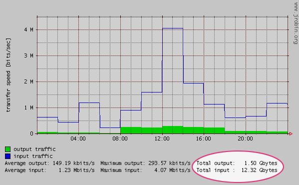

JRobin 1.3.1 released
What's new?
Core improvements
- This release offers serious performance benefits. It is now possible to create large RRD files (greater than 12Mb) 10-20 times faster than before (due to heavy optimization of low level I/O operations).
- RRD fetch operation is also some 20-30% faster (the same also applies to graph creation).
Graph improvements
- the following feature was easy to implement, but it might show as the most useful addition to this release: the TOTAL aggregation function in gprint directives. It is now possible to display transfer speed rates and the total number of bytes transferred on the same graph:

Suppose that you have a RRD file named traffic.rrd with two COUNTER datasources, inBytes and outBytes, and some AVERAGE archives. To print the total number of bytes transferred during the time span presented on the graph, use the following code:
RrdGraphDef graphDef = new RrdGraphDef(...); ... graphDef.datasource("in", "traffic.rrd", "inBytes", "AVERAGE"); graphDef.datasource("out", "traffic.rrd", "outBytes", "AVERAGE"); ... graphDef.gprint("in", "TOTAL", "Total input bytes: @sbytes", 1024); graphDef.gprint("out", "TOTAL", "Total output bytes: @sbytes", 1024);The fourth gprint parameter (1024) represents the base value used for value scaling (default is 1000). It is necessary to replace the default scaling value when counting bytes because1kbyte = 1024 bytes, not1000. However, when counting bits, base value should not be changed (since1kbit = 1000 bits).
- two new constant values are available in RPN expressions (CDEF datasource definitions): STEP (the size of the sample step in seconds - the custom step used in the graph) and SAMPLES (the total number of samples used, often the pixel-width of the graphing area);
- setFirstDayOfWeek method was added to RrdGraphDef class (the first day of week defaults to Monday, but you can adjust it if necessary). Adjustment can be made from Java code directly or from XML graph template in the following way:
<time_axis><first_day_of_week>Sunday</first_day_of_week></time_axis>
Other improvements
- Due to a deeply hidden bug in MRTG server application, it was not possible to monitor network interfaces with the same interface description (ifDescr) - a common situation on many SNMP enabled Windows platforms (fixed).
- MRTG demo application now supports network devices with a non-standard SNMP port number (different from 161). To support this in JRobin, the SNMP library shipped with previous releases had to be patched. Be sure to replace your old SNMP library with the one included in version 1.3.1.
- Default graph template used by MRTG server application was modified to display the total number of bytes transferred along with the average input/output traffic rates. To see the updated template, (re)move graph_template.xml file from your $HOME/mrtg/conf directory. Restart the MRTG server and you will find a new graph template created in the same directory as before. Adjust the template for best results, than restart the serve for the last time.
- Annotated copy of the original RRDTool tutorial was added to the main web site.
Copyright © 2003, 2004 Sasa Markovic & Arne Vandamme. All Rights Reserved.